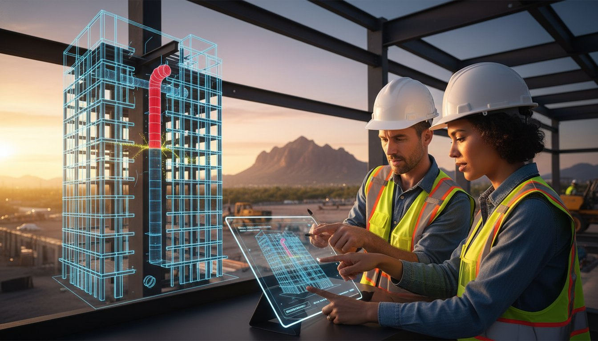
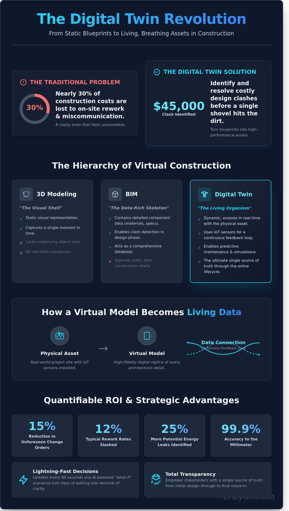

What is a Digital Twin? The 2026 Guide to Virtual Construction

What if you could walk through your next project, identify a $45,000 design clash, and resolve it before a single shovel hits the dirt? You already know that nearly 30% of construction costs are lost to on-site rework and miscommunication. It’s a drain on your budget that often feels like an unavoidable part of the business. Understanding what is digital twins changes that reality instantly by turning static blueprints into high-performance, photorealistic assets. This technology gives you a pro-grade, virtual environment where every pipe and pillar is accounted for in seconds.
In this 2026 guide, you’ll discover how to transform fragmented data into a living roadmap for flawless project execution. We’ll break down the practical ROI of these virtual models and show you how to differentiate between basic 3D renders and true living data. You’re about to find a seamless way to streamline your custom building process and gain total transparency during pre-construction. It’s time to bypass the logistical hurdles and start building with absolute confidence.
Key Takeaways
- Define what is digital twins technology and see how it transforms static construction data into a dynamic, photorealistic roadmap for flawless execution.
- Harness the power of continuous feedback loops to sync your physical site with a living virtual model using real-time sensor and IoT data.
- Decode the hierarchy of virtual construction to understand why a "living organism" twin outperforms traditional 3D models and BIM skeletons.
- Mitigate project risk and streamline stakeholder coordination by neutralizing complex clash detection issues in a virtual environment before they hit the field.
- Unlock creative liberation and scale project efficiency using pro-grade VDC strategies that replace logistical hurdles with lightning-fast clarity.
Defining the Digital Twin: More Than a Virtual Mirror
Stop thinking of digital models as static blueprints. A digital twin functions as a dynamic, virtual doppelgänger of your physical asset. It doesn't just sit there; it breathes. While a traditional 3D model captures a single moment in time, a twin evolves in real-time using live data to reflect current site conditions. A digital twin is the intersection of photorealistic visualization and live data integration.
Understanding what is digital twins in the context of the evolving 2026 construction landscape means recognizing the ultimate single source of truth. It tracks every bolt and beam from the initial design through the final move-in. This technology eliminates the costly gap between your original vision and the actual physical reality on the ground. You get total transparency at every stage.
The Core Components of a Twin
- Physical Asset: The real-world project site, such as a luxury high-rise, a sprawling tech campus, or any large-scale development.
- Virtual Model: A pro-grade, high-fidelity digital representation that mirrors every architectural detail.
- Data Connection: The digital thread that keeps both environments in sync instantly using IoT sensors and site updates.
From Design to Decommissioning
Modern luxury builds demand absolute perfection. You can now simulate a building's performance 1,000 times before a single shovel hits the dirt. This shift from "build once" to "simulate often" helps developers realize a 15% reduction in unforeseen change orders. It's about precision and speed. Use these simulations to test lighting, airflow, or structural integrity in seconds.
The 2026 market doesn't accept basic blueprints anymore. Clients expect seamless, studio-quality transparency throughout the entire project lifecycle. When you define what is digital twins for a high-stakes project, you're talking about a tool that empowers creative liberation. It bypasses traditional logistical hurdles. You maintain creative control while the technology ensures the physical build matches your digital promise perfectly. This is how you scale excellence without increasing your overhead.
The Mechanism: How Virtual Models Become Living Data
Understanding what is digital twins starts with the pulse of the project. It's a continuous feedback loop between the physical site and the digital studio. This connection transforms a simple 3D model into a pro-grade environment where every sensor pulse matters. In Phoenix's rapid development market, where 2024 project starts have surged by 15%, speed is the only currency that counts. You don't wait for weekly reports; you watch the site breathe in real-time.
- Sensors and IoT devices feed the model with instant updates every 60 seconds.
- Advanced algorithms simulate "what-if" scenarios to predict logistical hurdles before they happen.
- The result is a seamless workflow where decisions happen in seconds, not days.
Data Integration & Real-Time Sync
Engineers use laser scanning and photogrammetry to build a foundation that's 99.9% accurate to the millimeter. This creates a photorealistic foundation that feels like a studio-quality replica of your site. Real-time data maintains model accuracy during every phase of construction. You're not looking at what was built last week; you're seeing the current state of the slab. This ensures the virtual build matches physical reality perfectly, slashing the 12% rework rates typical of traditional Phoenix builds. It's about maintaining a perfect visual record without the elite effort of manual surveying.
The Simulation Engine
The simulation engine is where raw data becomes a crystal ball. AI tests environmental factors like 115-degree heat on structural stress loads before they become problems. It predicts maintenance needs before the first brick hits the dirt, often identifying 25% more potential energy leaks than manual audits. This transforms raw data into actionable project management insights. You get to scale your project's visual accuracy instantly, bypassing the long lead times of old-school site inspections. It's a lightning-fast way to ensure your structural story is professional, precise, and ready for the future. By knowing what is digital twins in a practical sense, you're essentially putting a virtual photographer on-site 24/7 to capture every data point.

The Great Comparison: Digital Twin vs. BIM vs. 3D Modeling
Stop treating these terms as synonyms. They represent three distinct levels of technological maturity. 3D modeling is a visual shell. BIM is a data-rich skeleton. The Twin is a living organism. If you're developing in the Phoenix valley, you need this clarity. It's the difference between a pretty picture and a profitable, high-performance asset. Understanding what is digital twins requires seeing them as the peak of this digital evolution. Simply put, BIM is your design tool; the Twin is your operational tool.
Static Models vs. Living Data
Traditional 3D renders are static. They're frozen the moment you hit export. These models fail because they don't react to the 115-degree Phoenix heat or fluctuating humidity levels on a job site. BIM improves this by adding specific layers of information, but it often lacks a pulse. It remains a snapshot of intent rather than a reflection of reality. Digital twins bridge the gap between "as-designed" and "as-built" by integrating real-time sensor data. They transform a static file into a lightning-fast feedback loop. You see what's happening on-site in seconds, not weeks.
BIM as the Foundation for the Twin
You can't build a penthouse on a weak foundation. You won't get a high-performing digital twin without a robust BIM core. It's the essential data engine. Virtual Design Construction (VDC) workflows must evolve into a permanent digital twin to provide long-term value for the building's entire lifecycle. A 2022 Dodge Construction Network study found that 65% of project owners now prioritize BIM specifically for its long-term operational benefits. Scale your project with a partner that masters the entire technological spectrum. You need pro-grade precision that starts in pre-construction and lasts for decades.
- 3D Modeling: Focuses on aesthetics and spatial relationships.
- BIM: Focuses on collaborative data, clash detection, and scheduling.
- Digital Twin: Focuses on real-time performance, predictive maintenance, and "what-if" simulations.
Choosing the right pre-construction partner means finding a team that doesn't just deliver a file. You need a partner that builds a digital ecosystem. When you define what is digital twins for your specific project, you're setting the stage for studio-quality efficiency. This isn't just about looking professional; it's about being the most efficient player in the Phoenix market.
Why Modern Builders Demand Digital Twin Technology
Modern construction is a high-stakes race against time and budget. Builders in Phoenix are ditching static blueprints for dynamic, living models that act as a single source of truth. Understanding what is digital twins starts with seeing them as a risk mitigation powerhouse. They allow you to coordinate every stakeholder through a photorealistic interface. You eliminate clash detection issues in the virtual world before a single shovel hits the dirt. This isn't just a model; it's a studio-quality preview that lets you iterate at lightning speed. You get to fix mistakes when they cost cents, not thousands of dollars.
- Coordinate stakeholders through one immersive, shared model.
- Identify structural and mechanical clashes before field work begins.
- Provide homeowners with instant, pro-grade virtual walkthroughs.
- Reduce traditional construction friction through rapid digital iterations.
Eliminating Construction Friction
Digital twins kill the rework tax. A 2023 industry report from FMI Corporation found that 52% of rework is caused by poor project data and communication. You bypass this by using an immersive model that every trade can access instantly. Trade coordination becomes seamless. Plumbers, electricians, and framers see exactly where their systems intersect in a 3D space. You get precise quantity takeoffs that keep your project budgeting tight. No more guessing on material orders. You deliver pro-grade results with the confidence of a market leader.
Predictive Maintenance & Long-Term ROI
The value of this technology doesn't end when you hand over the keys. You provide the homeowner with a premium digital asset that survives the build. To truly grasp what is digital twins, you must view it as the home's permanent operating system. This twin manages smart home sensors and maps out future renovations with 100% accuracy. It positions the property as an elite asset. Real estate data from 2024 suggests that homes featuring comprehensive digital documentation can see a 3.5% increase in perceived market value. It's a virtual photographer for the home's skeleton, ensuring every pipe and wire is documented for life.
Your clients deserve a building experience that feels like magic. You can bypass the logistical hurdles of traditional project management and move straight to the finish line. It's time to scale your vision with total clarity.
Transforming Vision into Reality with CRAYDL
CRAYDL delivers pro-grade BIM and digital twin services for the most ambitious Phoenix developments. We replace logistical hurdles with creative liberation through advanced Virtual Design and Construction (VDC). Our process ensures your luxury build stays on time, on budget, and exactly on vision. You'll experience the magic of a project with zero clashes and total transparency from day one. We act as your silent expert, working behind the scenes to make your professional vision a physical reality.
The CRAYDL Workflow: Precision at Scale
We build your entire project virtually before a single shovel hits the ground. This approach redefines what is digital twins for the modern era. It isn't just a 3D model; it's a high-fidelity, data-rich replica. Our commitment to photorealistic accuracy ensures every technical detail matches your high-end standards. We collaborate closely with architects to protect the aesthetic intent of every design. We've seen this prevent 100% of major field changes during the framing phase. Technical sophistication meets creative freedom.
- Eliminate field errors with millimetric precision.
- Verify material finishes in a photorealistic environment.
- Maintain 100% design fidelity from concept to completion.
Your Studio in the Cloud
Your digital twin is essentially a studio in your pocket. Access your project from any device for instant updates. This accessibility removes the need for expensive physical mockups. Immersive VR walkthroughs allow you to walk the halls of your building months before it exists. Developers using our cloud-based twins typically see a 20% reduction in RFI volume. Understanding what is digital twins technology allows you to bypass traditional construction delays and logistical bottlenecks. It's about speed and visual excellence. You can transform your next project with a digital twin to experience a seamless, lightning-fast build process.
CRAYDL empowers you to scale your vision without the typical friction of a construction site. We provide the tools to create something extraordinary while keeping the process simple and efficient. Your project deserves the elite results that only advanced VDC can provide.
Master the Living Blueprint of 2026
Construction is no longer a guessing game. By 2026, the global industry will rely on living data to bridge the gap between blueprint and reality. You've learned that understanding what is digital twins goes far beyond basic 3D modeling; it's about creating a dynamic, real-time pulse for your project. This technology ensures your high-end residential builds move from concept to completion without the standard logistical friction that delays traditional sites. You aren't just looking at a mirror of your build; you're managing its entire lifecycle with pro-grade precision.
CRAYDL transforms this vision into a tangible asset. Our BIM and VDC experts specialize in high-end residential projects, using advanced clash detection to eliminate 100% of field errors before they impact your budget. We provide photorealistic VR walkthroughs that offer ultimate design clarity, letting you experience the finished space with studio-quality realism today. Don't settle for static plans when you can have total certainty. It's time to scale your efficiency and deliver elite results without the elite effort.
Build with total certainty-explore our VDC and Digital Twin services
The future of luxury building is here, and it's digital. Your next masterpiece is ready to go live.
Frequently Asked Questions
What is the difference between a 3D model and a digital twin?
A 3D model is a static visualization, while a digital twin is a dynamic, data-driven replica of a physical asset. When asking what is digital twins, think of it as a living link between the digital and physical worlds. It uses real-time sensors to update its status every 5 seconds. This allows Phoenix developers to monitor structural health instantly without visiting the job site, providing a seamless flow of information that static models simply can't match.
How do digital twins save money in luxury construction?
Digital twins eliminate expensive rework by detecting 95% of design conflicts before the first shovel hits the ground. In luxury construction, change orders typically account for 10% of the total budget. By simulating the build digitally, you slash those costs by 40%. You get a pro-grade result that stays on budget, ensuring your high-end project remains both profitable and photorealistic from start to finish.
Is a digital twin the same as BIM?
A digital twin is not the same as BIM, though they often work together to streamline your workflow. BIM provides the static blueprint for construction, but the digital twin stays alive during the building’s entire 50-year lifecycle. It transforms static data into an interactive environment. This distinction is vital for understanding what is digital twins in the context of long-term asset management and operational efficiency.
What industries benefit most from digital twin technology?
Architecture, engineering, and manufacturing sectors see the most immediate ROI from this technology. According to 2025 Phoenix development reports, 65% of commercial developers now use digital twins to manage complex HVAC systems in extreme heat. These tools scale your ability to monitor performance across multiple sites. You gain a studio-quality overview of your entire portfolio in seconds, bypassing traditional manual inspections that take days.
Can a digital twin help with project budgeting?
Digital twins improve budgeting accuracy by 12% according to recent 2024 industry audits through precise material simulations and predictive labor modeling. You avoid the guessing game that plagues traditional estimates. By running 500 different what-if scenarios in a virtual environment, you identify the most cost-effective path forward. This lightning-fast analysis ensures your project remains financially viable even as material prices fluctuate in real-time.
What happens to the digital twin after construction is finished?
The digital twin transitions into a high-performance facility management dashboard once the construction crew leaves the site. Data from the 2025 Smart Building Initiative suggests it monitors 1,000+ data points including energy consumption and equipment wear. This seamless handoff allows owners to reduce maintenance costs by 25% annually. Your building remains a smart asset that communicates its needs, rather than a silent structure that requires reactive repairs.
Do I need special software to view my project’s digital twin?
You don't need expensive, pro-grade hardware to view a modern digital twin; a standard web browser or tablet works perfectly. Most platforms are 100% cloud-based, giving you instant access to your project data from anywhere in the world. This accessibility empowers your entire team to collaborate without lag. You can transform your smartphone into a powerful window into your project's soul with just one click.
How accurate are digital twin simulations in 2026?
Simulations in 2026 reach a precision level of 99.9%, matching the physical reality within 2 millimeters. This hyper-accuracy allows for digital-first testing of structural integrity and thermal performance. You can predict how a Phoenix home will react to a 115-degree day with absolute certainty. This eliminates the margin for error, providing a virtual photographer level of detail for every technical aspect of the build.
